数据结构与算法
1. 数据结构
1.1 二叉排序树
1 | class Node |
1.1.1 查找
1 | BiTree SearchBST(BiTree root, KeyType target) |
实际上二叉排序树在查找失败时应该确定目标的插入位置。
1 | bool SearchBST(BiTree root, KeyType target, BiTree parrent, BiTree& ret) |
1.1.2 插入元素
1 | bool InsertBST(BiTree& root, ElemType elem) |
1.1.3 删除元素
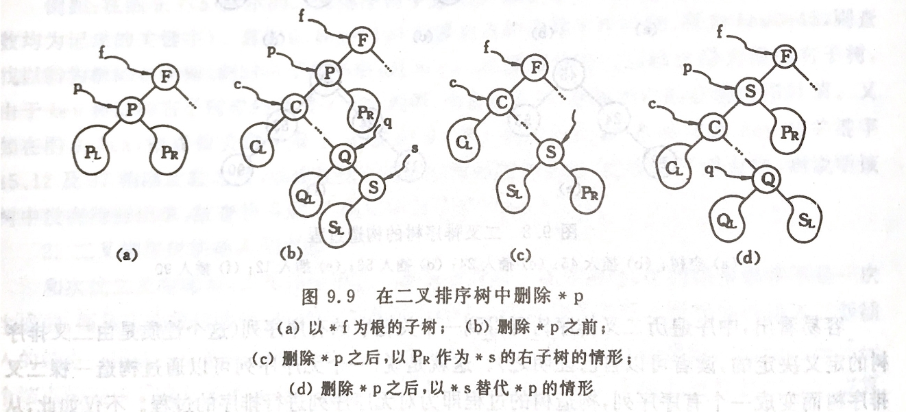
1 | bool DeleteBST(BiTree& root, KeyType target) |
1.2 平衡二叉树 （ AVL Tree ）
1 | class AVLNode |
1.2.1 失衡旋转
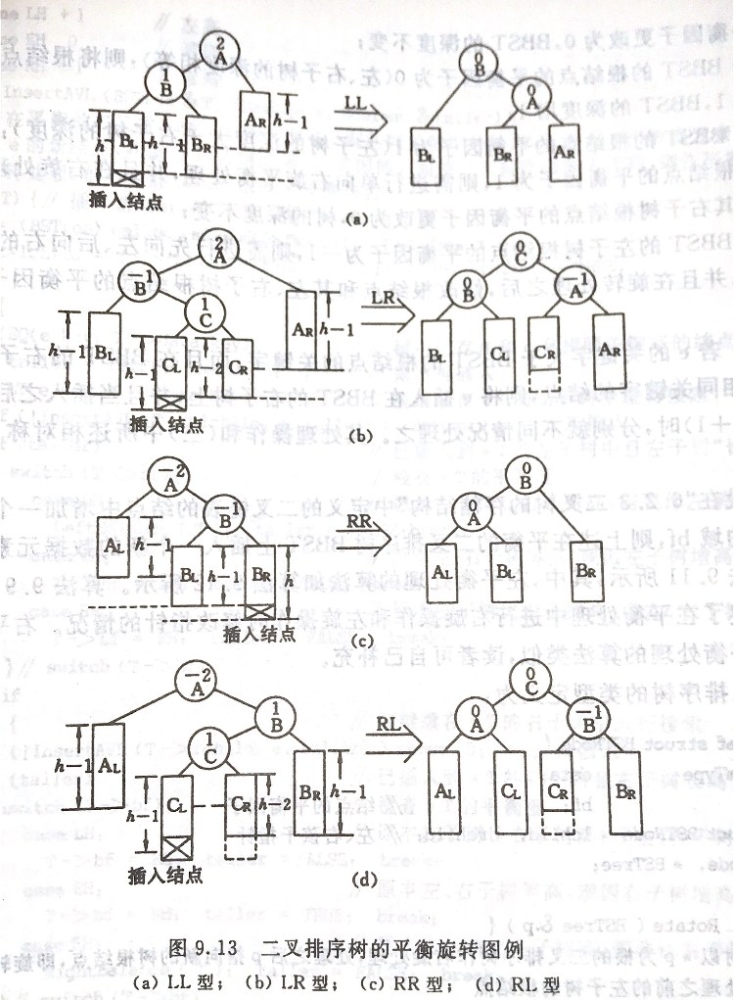
1 | // rc: right child |
1 |
|
二叉排序树平衡因子的更改画示意图即可。
1.2.2 删除元素
先按照 BST 的方法删除元素，然后重新处理平衡。
TODO: BST 删除元素后重新平衡的 Code
1.3 红黑树 （ Red-Black Tree )
AVL 树虽然解决了普通二叉排序树畸形的问题，但是平衡操作过多。红黑树是一个自平衡（但不是绝对平衡）的 BST 。参考这篇文章。
1.3.1 构造规则
- 每个节点都有红色或者黑色
- 树的根节点必为黑色
- 没有两个相邻的红色节点（红色节点不能有红色父节点或红色子节点。但是并没有说不能出现连续的黑色节点）
NULL节点视为黑色- 从任意节点（包括根节点）到其任何后代
NULL节点的每条路径都具有相同数量的黑色节点
1.3.2 插入节点
假设新插入节点为 X 。
将新插入节点标记为红色
如果 X 是根节点，则重新标记为黑色，结束
如果 X 的父节点是红色，同时 X 也不是根节点
- 如果 X 的叔叔节点是红色
- 将父节点和叔叔节点标记为黑色
- 将祖父节点标记为红色
- 让 X 颜色与祖父节点颜色相同，将祖父节点设置为当前节点 X ，重复步骤 2 和步骤 3

- 如果 X 的叔叔节点是黑色，且 X 是右孩子
- 将父节点作为新的当前节点 X
- 以 X 为支点进行左旋
- 重复步骤 2 和步骤 3

- 如果 X 的叔叔节点是黑色，且 X 是左孩子
- 将父节点标记为黑色
- 将祖父节点标记为红色
- 以祖父节点作为支点进行右旋

注意： 第 2 图和第 3 图有误。按照已有的图，插入节点 35R 后，节点 50R 和 75R 变为 50B 和 70B ，60B 变为 60R 并作为当前节点； 40R 和 120R 变为 40B 和 120B ，80B 变为 80R 并作为当前节点； 80R 变为 80B ，重染色结束。 如果要符合操作描述，节点 120R 应该为 120B (忽略树的不平衡)。
- 如果 X 的叔叔节点是红色


1.3.3 删除节点
首先将 RBT 当作普通的 BST 找到待删除节点。分三种情况：
- 被删除节点是叶子节点，则直接删除
- 被删除节点只有一个子节点，则直接删除，并且用子节点替代原节点位置
- 被删除节点有两个子节点，则先找出后继节点，然后将后继节点的内容复制给被删除节点，之后删除后继节点。删除后继节点的情况必为上面两条之一。注意这一步的复制只复制内容，不复制颜色
删除节点后的树不一定满足红黑树的性质，因此要对树重新染色。假设删除节点 Y 之后，替代 Y 位置的节点为 X （ NULL 节点也算）。如果 Y 的颜色为黑色，则路径上少了一个黑节点，颜色平衡被破坏。因此我们假设 X 除了原本的颜色之外，还带有一个额外的黑色。假设 X 原本的颜色为 x ，我们用 xB 表示 X 现在的颜色。
如果 X 是 RB 节点，直接将 X 的颜色设置为黑色，红黑树性质即可恢复
如果 X 是 BB 节点且为根，什么都不做
如果 X 是 BB 节点且不为根
如果 X 的兄弟节点是红色（此时 X 的父节点和 X 兄弟节点的子节点都是黑色）
处理思路是将该情况转换为后面三种情况
- 将 X 的兄弟节点设置为黑色
- 将 X 的父节点设置为红色
- 以 X 的父节点为支点左旋
- 左旋后，更新 X 的兄弟节点
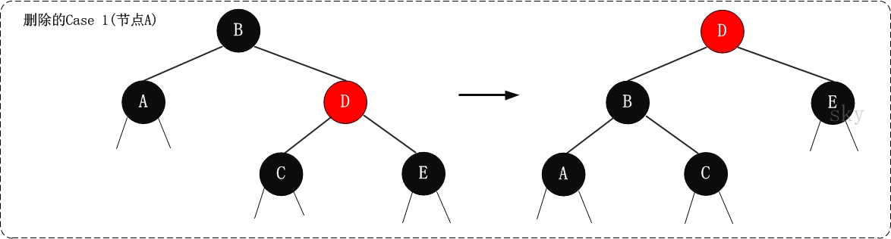
注意： 此图有误，旋转后 B 应该染红，D 应该染黑
如果 X 的兄弟节点是黑色，且兄弟节点的两个孩子都是黑色
处理思路是将 X 中多余的一个黑色往根方向移动。多余的黑色属性移动到 X 的父节点后，到 X 和其兄弟的路径上黑色节点数目不一致，因此将其兄弟染红，使其一致
- 将 X 的兄弟节点设置为红色
- 将 X 的父节点设置为新的 X 节点
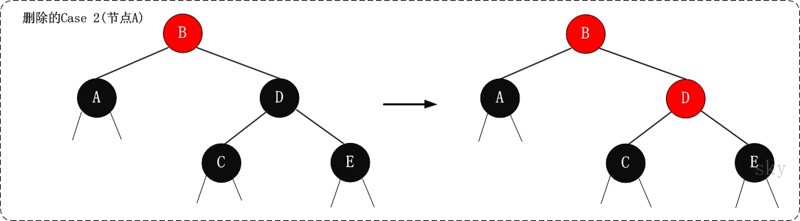
如果 X 的兄弟节点是黑色，兄弟节点的左孩子是红色，右孩子是黑色
处理思路是将该情况转换为最后一种情况
- 将 X 的兄弟节点的左孩子设置为黑色
- 将 X 的兄弟节点设置为红色
- 以 X 的兄弟节点为支点右旋
- 右旋后，更新 X 的兄弟节点

如果 X 的兄弟节点是黑色，兄弟节点的右孩子为红色（左孩子任意颜色均可）
处理思路是去掉 X 中的额外黑色，将 X 变成单独的黑色
- 将 X 的父节点颜色赋值给 X 的兄弟节点
- 将 X 的父节点设置为黑色
- 将 X 兄弟节点的右孩子设置为黑色
- 以 X 的父节点为支点左旋
- 将根节点设置为 X


1.4 B 树
1.4.1 构造规则
B 树是多路平衡查找树，m 阶 B 树的定义如下。
- 树中每个节点至多有 m 棵子树
- 每个节点最多有 m-1 个关键字 （可以存有的键值对）
- 根节点最少可以只有 1 个关键字
- 非根节点至少有 $\lceil m/2\rceil$ 棵子树
- 每个节点中的关键字都按照从小到大的顺序排列。每个关键字的左子树中所有关键字都小于它，而右子树中所有的关键字都大于它
- 所有的叶子节点位于同一层，并且不带任何信息
因此根节点的关键字范围是 $1\leq k\leq m-1$ ，非根节点的关键字范围是 $\lceil m/2\rceil\leq k\leq m-1$ 。一棵 4 阶 B 树的示例图如下。
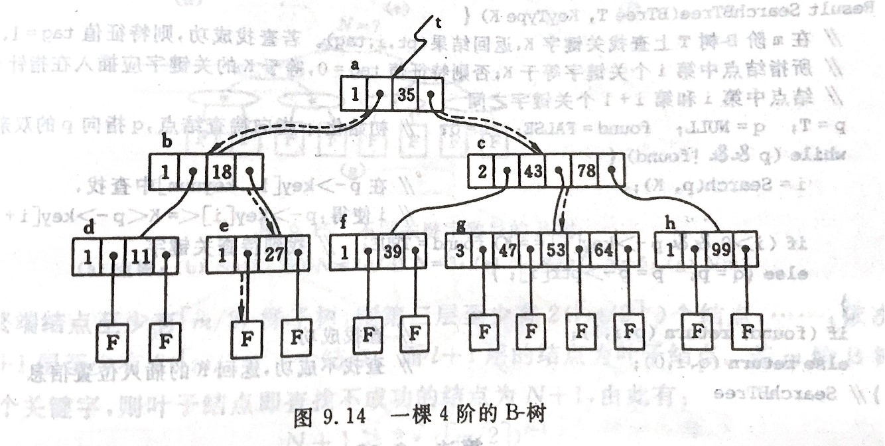
1.4.2 插入节点
B 树的插入删除可以参考这篇文章
B 树的插入首先要找到最底层的某个非终端节点。如果添加后节点的关键字个数超过 $m-1$ ，则要产生节点的“分裂”。一个 3 阶 B 树的插入过程示例图如下。


1.4.3 删除节点
在 B 树上删除一个关键字，首先查找到关键字所在节点并删除该关键字。然后
如果该节点是最下层节点，且关键字数目不小于 $\lceil m/2\rceil - 1$ ，则删除结束。如下图所示：
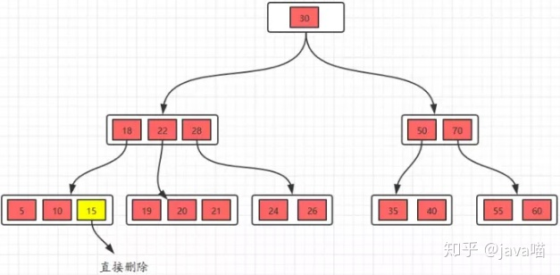
如果节点不是最下层节点，删除时需要用后继节点替代，如下图所示
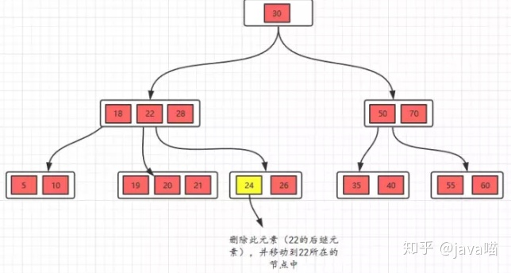
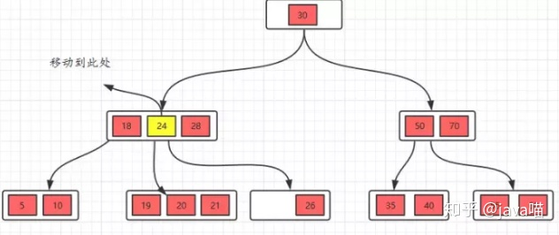
- 如果替代后，最下层节点的关键字数目不小于 $\lceil m/2\rceil$ ，则删除结束
- 如果替代后，最下层节点的关键字数目小于 $\lceil m/2\rceil - 1$ ，则需要从其兄弟节点处借用一个关键字，该借用过程需要通过父节点进行。具体如图所示
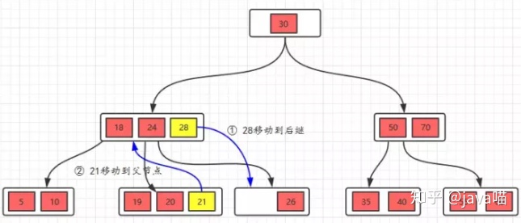
- 如果兄弟节点自己的关键字数目也不够，没法借用，那么要进行节点合并。具体如图所示
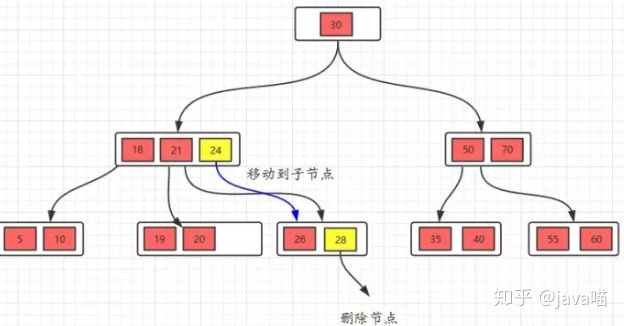
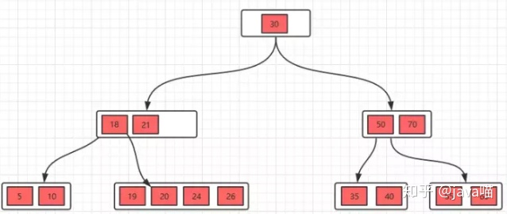
1.5 B$^+$ 树
B$^+$ 树是 B 树的变种。图示是一棵 3 阶 B$^+$ 树。
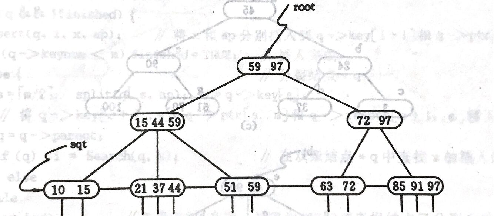
1.5.1 与 B 树的异同
- 相同点
- 根节点至少有一个关键字
- 非根节点的关键字范围 $m/2 \leq k\leq m-1$
- 不同点
- B$^+$ 树有两种类型的节点：内部节点（索引节点）和叶子节点。内部节点不储存数据，只储存索引，数据都储存在叶子节点
- 内部节点和叶子节点中的关键字按从小到大的顺序排列
- 每个叶子节点都存有相邻叶子节点的指针，叶子节点本身依照关键字大小自小到大排序
- 父节点存有其子节点中最大或最小关键字
- 通常使用 B$^+$ 树时会有两个头指针，一个指向根节点，另一个指向最小关键字的叶子节点
1.5.2 插入节点
- B$^+$ 树的插入只在叶子节点上进行
- 当节点中的关键字多于 $m-1$ 时，分裂节点并更新父节点
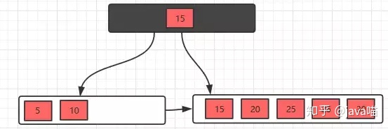
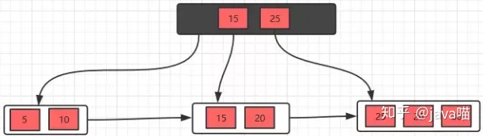
1.5.3 删除节点
- 删除节点的操作类似 B 树
- 删除关键字后，如果关键字数目少于 $\lceil m/2\rceil - 1$ ，借用节点时直接通过兄弟节点即可，然后修改父节点的索引。如图所示（父节点记录最小关键字）
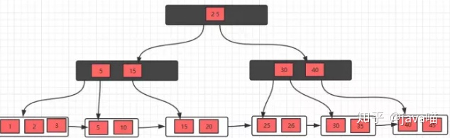
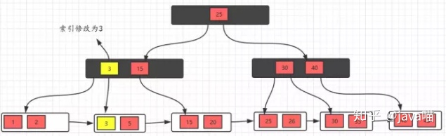
- 如果关键字数目少于 $\lceil m/2\rceil - 1$ 且左右兄弟都无关键字可借，则合并叶子节点
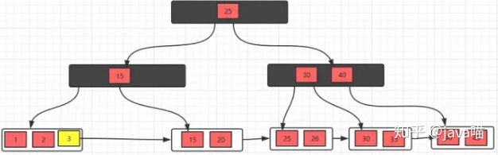
1.5.4 B$^+$ 树相对 B 树的优势
- 单一节点储存的元素更多，使得查询的 IO 次数更少
- 所有的查询都要查找到叶子节点，查询性能是稳定的
- 所有的叶子节点形成了一个有序链表，更加便于查找
1.6 B$^*$ 树
B$^*$ 树是 B$^+$ 树的变体。B$^+$ 树的块最低使用率是 1/2 ，B$^*$ 树的块最低使用率是 2/3 。B$^*$ 树的非根非叶子节点也添加了指向兄弟的指针。如图所示

B*树的分裂
当一个结点满时，如果它的下一个兄弟结点未满，那么将一部分数据移到兄弟结点中，再在原结点插入关键字，最后修改父结点中兄弟结点的关键字（因为兄弟结点的关键字范围改变了）
如果兄弟也满了，则在原结点与兄弟结点之间增加新结点，并各复制1/3的数据到新结点，最后在父结点增加新结点的指针
1.7 前缀树
前缀树又称字典树，用于保存关联数组，其中的键通常是字符串。
1.7.1 构造规则
- 根节点不包含字符，除根节点以外每个节点只包含一个字符
- 从根节点到某一节点，路径上经过的字符连接起来是该节点对应的字符串
- 每个节点的所有子节点包含的字符串不相同
1.7.2 多重链表实现（Trie 树）
用多重链表实现的前缀树又称 Trie 树，如下图所示
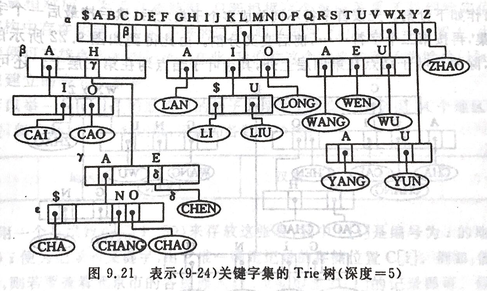
具体实现的程序如下
1 | constexpr auto MAX_KEY_LEN = 16; // 关键字最大长度 |
1.8 并查集
并查集是支持一组互不相交集合的数据结构，通常用森林实现。开始时让每个元素构成一个单元素的集合，然后按一定顺序将属于同一组的元素所在的集合合并，期间要反复查找元素在哪个集合中。并查集常用的操作有初始化，查找元素所属集合 Find 和合并子集 Bind 。
1.8.1 parent 数组实现
我们用 parent 数组来表示树。数组下标表示树的一个节点，下标所对应的值表示树的父节点，并规定树的根节点以自己为父节点（即 parent 中的元素值为下标本身）。
假设待查找元素为 x ，查找操作只需要比较 x 的父节点是否为其自身。代码如下
1 | int Find(int x) { return x == parent[x]? x: Find(parent[x]); } |
对于合并操作，分别找到两个元素的根节点，然后使其中一个根节点的父节点为另一个根节点即可。代码如下
1 | void Union(int x1, int x2) |
并查集的完整实现如下
1 | class DisjointSet |
1.8.2 优化
对上面的实现，因为没有对树进行特殊处理，所以树的不断合并可能导致树的严重不平衡，最坏情况会使查找操作的复杂度达到 $O(N)$ 。有两种优化思路。
- 按秩合并：秩为 $r$ 的树高度上界为 $r+1$ ，只有一个节点的树秩记为 0 。两棵树合并时，如果秩不相等，则将秩小的树合并到秩大的树上。如果相等，两棵树任意合并，秩 +1
- 路径压缩：在执行查找操作的过程中，将路径上的所有节点直接连到根节点上
可以证明，同时使用这两种方法的平均复杂度为 $O(\alpha(N))$ ，其中 $\alpha(N)$ 是阿克曼函数的反函数。优化后的并查集实现如下
1 | class DisjointSet |
2. 算法
2.1 直接插入排序
2.1.1 原理
设待排序序列为 v 。先将序列中第 1 个记录看成是有序的子序列，然后从第 2 个记录开始逐个进行插入。在自 $i-1$ 起往前搜索的过程中，可以同时后移记录。
2.1.2 复杂度
$O(N^2)$
数组基本有序时，直接插入排序效率最高。
2.1.3 实现
1 | void InsertSort(std::vector<int>& v) |
2.2 Shell 排序
2.2.1 原理
希尔排序先将整个待排序序列分为若干子序列，分别进行直接插入排序，当整个序列基本有序时，再对全体进行一次直接插入排序。如图所示
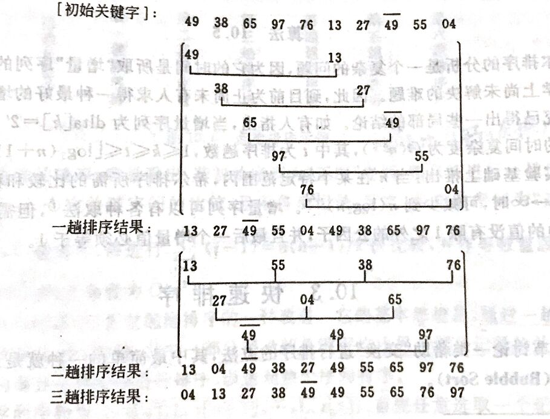
2.2.2 复杂度
大约为 $O(N^{1.3})$
2.3 冒泡排序
2.3.1 原理
比较相邻记录，如果逆序则交换之。
2.3.2 复杂度
平均 $O(N^2)$
2.3.3 实现
1 | void BubbleSort(std::vector<int>& v) |
2.4 快速排序
2.4.1 原理
通过一趟排序，将待排序记录分割为独立的两部分，其中一部分的关键字均比另一部分的关键字小。对这两个部分递归调用快速排序，以达到整个序列有序。
附设两个指针 low 和 high 。假设枢轴记录的关键字为 pivotkey ，先从 high 指定位置向前找到第一个小于 pivotkey 的记录并与 pivotkey 交换，再从 low 指定位置向后找到第一个关键字大于 pivotkey 的记录并与 pivotkey 交换，直到 low 和 high 重合。可以将 pivotkey 暂存，直到一趟排序结束后再将 pivotkey 移动到正确位置，并返回该位置。示意图如下
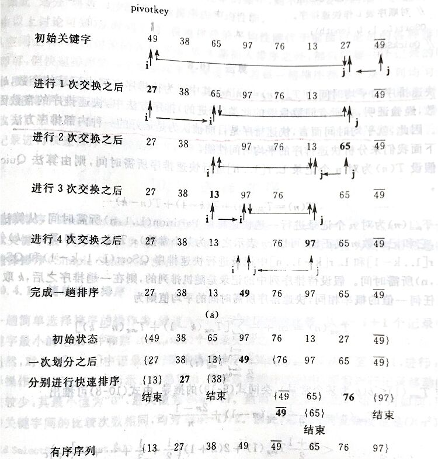
2.4.2 复杂度
平均复杂度为 $O(N log N)$ ，最坏情况复杂度为 $O(N^2)$
2.4.3 实现
1 | int Partition(std::vector<int>& v, int low, int high) |
如果在一趟排序后比对两边的长度，并优先对较短部分进行快速排序，栈最大深度可下降为 $O(log N)$ 。
2.5 归并排序
2.5.1 原理
将初始序列看成 n 个有序的子序列，再两两归并。迭代进行该步骤直到整个序列有序。二路归并的示意图如下
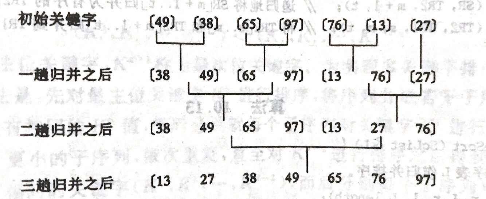
2.5.2 复杂度
二路归并的时间复杂度为 $O(NlogN)$
2.5.3 实现
- 递归实现
递归形式的二路归并实用性很差
1 | void Merge(std::vector<int>& v, int left, int mid, int right) |
- 非递归实现
非递归实现从间隔 1 开始，每次归并后间隔变为 2 倍，直到间隔达到长度的一半
1 | void Merge(std::vector<int>& v, int left, int mid, int right) |